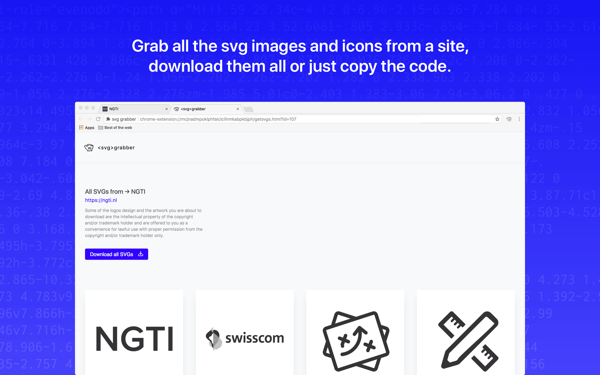
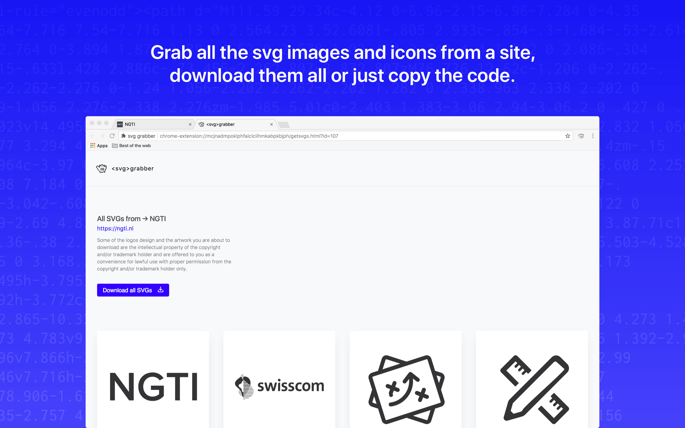

A forma mais fácil de baixar
<SVG>
A extensão SVG Grabber é a maneira mais fácil de baixar imagens SVG de um site. Basta clicar no botão da extensão e supimpa!
Sponsor Dark
A extensão SVG Grabber é a maneira mais fácil de baixar imagens SVG de um site. Basta clicar no botão da extensão e supimpa!
Sponsor 